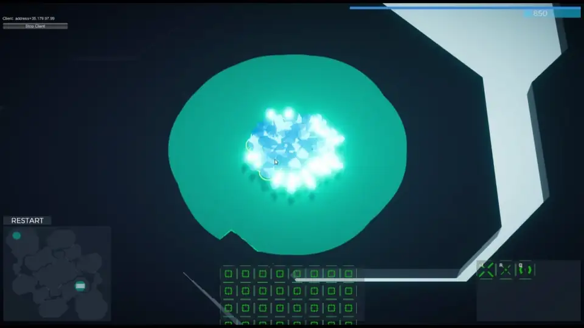
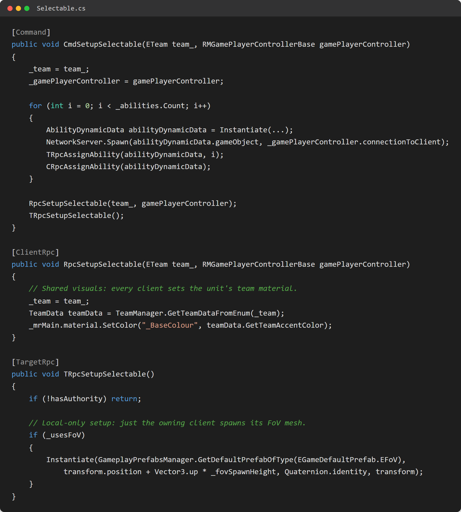
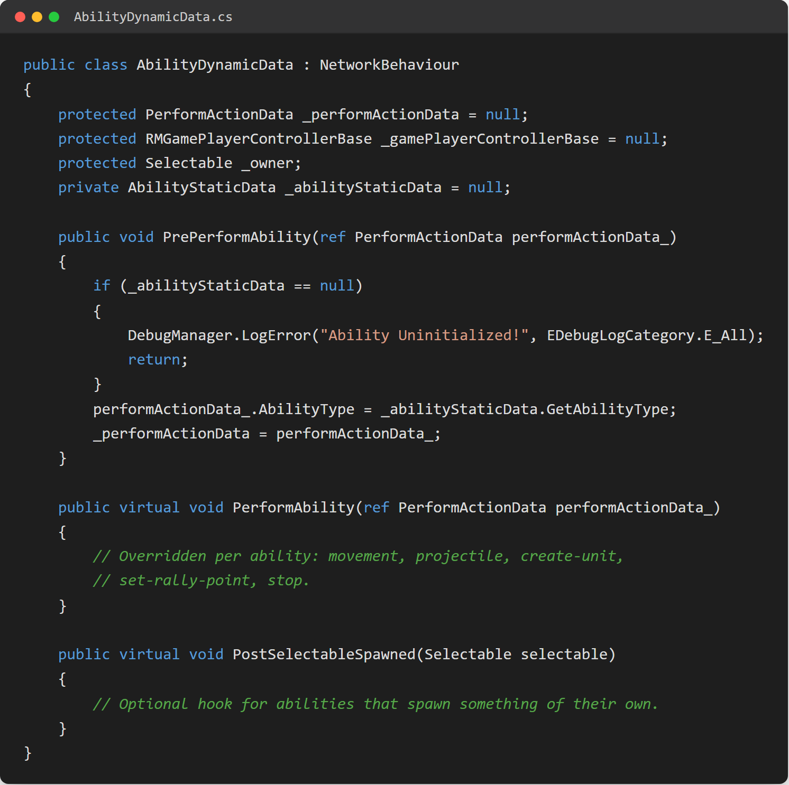
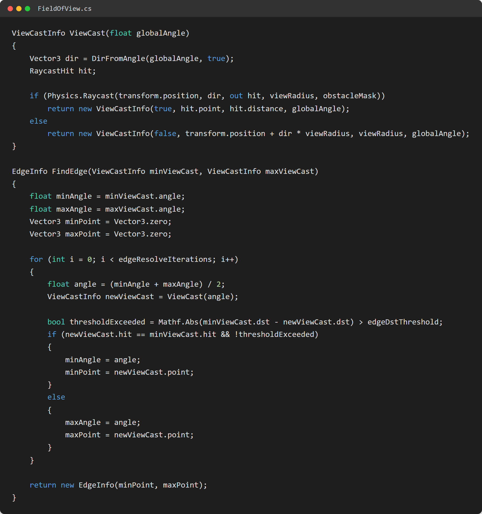

RedMirror
RedMirror is a networked real-time strategy prototype (think a slice of StarCraft/Command & Conquer’s core loop) built from scratch in Unity to explore server-authoritative multiplayer architecture, a data-driven ability framework, and a custom fog of war system. It never shipped publicly; it was a personal deep-dive into the networking and systems side of RTS games.

The Project
I built RedMirror solo, acting as programmer, network architect, and designer. The goal was to strip an RTS down to its core interaction loop (select, command, produce, fight) and build every layer of it properly networked from day one, rather than bolting multiplayer on afterwards.
Everything below (selection, abilities, combat, fog of war, the economy) runs across a server-authoritative connection using Mirror, with dedicated Windows client and headless Linux server builds.
Server-Authoritative Networking
Every gameplay system is split deliberately across
[Command], [ClientRpc], and
[TargetRpc] boundaries: the server owns the truth,
clients request actions and receive the results. When a unit is
spawned, the owning client gets a targeted RPC to finish local setup
(team colours, ability wiring) while every client gets a general RPC
for the shared visuals, a deliberate authority/ownership split
rather than a full state sync.
A custom RMNetworkManager and RMNetworkRoomManager
support both direct-connect and a full lobby flow: ready-up,
host-triggered start, and a server-driven countdown into the match.
The first two connections are assigned as players (Team 1 / Team 2
automatically); anyone else who connects is dropped into a
spectator controller instead of failing to join.
[Command]; the server, as sole authority, validates it and fans the result out via [ClientRpc] to every client and via [TargetRpc] to just the connection that owns the object.
Selectable.cs is a good example of the split in
practice: the server-only Cmd spawns each unit's
ability objects and hands ownership to the right connection, the
Rpc sets team-coloured materials on every client, and
the TargetRpc (guarded by a
hasAuthority check) is where the owning client
spawns its own field-of-view mesh, since no one else needs it.
I also built and deployed a dedicated headless Linux server build alongside the Windows client, with upload/login scripts for pushing builds to the server, an actual deploy pipeline rather than relying on Unity's built-in host mode.
The Ability Framework
Abilities follow the same static/dynamic data split I used on Niloc,
adapted for a networked context. Each ability is a
ScriptableObject (AbilityStaticData)
holding designer-facing config (name, icon, hotkey, cursor
mode, cooldown) completely separate from its behaviour.
Behaviour lives in a networked AbilityDynamicData
subclass (movement, projectile, create-unit, set-rally-point, stop),
instantiated per unit and spawned individually over the network. A
simple template-method flow (PrePerformAbility
→ PerformAbility → PostSelectableSpawned)
meant new abilities could be added without touching the
selection or input code at all.
PrePerformAbility() stages the shared data, PerformAbility() runs the actual effect, and the optional PostSelectableSpawned() hook lets an ability act on whatever it just spawned, so new abilities plug in without touching selection or input code.
AbilityDynamicData is the networked base class every
ability subclasses: movement, projectile, create-unit,
set-rally-point, and stop each override PerformAbility()
with their own effect while sharing the same staging and
initialization logic.
RTS Command & Selection
The full command layer you'd expect from an RTS: click and drag-box selection, double-click to select all visible units of a type, and shift/ctrl control groups with double-tap-to-recentre the camera. A minimap handles independent left-click (context action) and right-click (move/attack-move) input, remapping screen space to world space.
The command card UI rebuilds its ability icons dynamically based on whatever is currently selected, backed by a small resource and supply economy: a passive resource tick plus per-unit-type cost and supply-cap checks before production is allowed. Structures support rally points, visualised with a live line renderer, and group orders compute a centroid and leader offset so units move together in formation rather than stacking on one point.
Custom Fog of War
Rather than using an asset-store plugin, I built the fog of war system from scratch: a raycast-based vision cone per unit, a binary search to resolve sharp shadow edges where the cast changes from a hit to a miss, and a procedurally generated mesh rebuilt at runtime to represent the currently visible area.

ViewCast fires a single raycast per angle step around
the unit; whenever two adjacent casts disagree on whether they hit
something (or land at very different distances), FindEdge
binary-searches between them for a fixed number of iterations to
snap the mesh edge tight to the obstacle instead of leaving a
jagged gap.
It's a genuinely custom geometry algorithm rather than a toggled shader effect, and it was one of the more satisfying systems to get right, especially tuning the edge-resolve iterations so shadows didn't visibly "pop" as units moved.
Evaluation
RedMirror stayed a prototype: the scope of a full RTS (balancing, content, a real economy, matchmaking) was always bigger than a solo side project could reasonably finish. What I got out of it was worth building anyway: hands-on experience with server-authoritative networking under Mirror, a second pass at the data-driven ability pattern from Niloc in a much more demanding networked context, and a fog of war system built from first principles instead of dropped in from a plugin.
If I picked it back up, the ability framework is the piece I'd revisit first: moving cooldown and resource-cost data out to the server more strictly so a desync or a modified client can't bend the rules, something that mattered less as a solo prototype but would be a hard requirement before this went anywhere near other players.
RedMirror isn't publicly released and doesn't have a build or source link to share right now. This write-up covers the systems as they stand in the project.